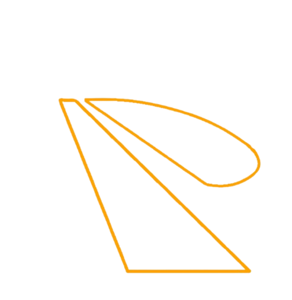

Quem somos
Vagas
Quem somos
Quem somos
Quem somos
Login
Olá, eu sou a Lupita!
Seu futuro profissional começa aqui!
CONFIRA AS VAGAS

Seu futuro profissional começa aqui!
Temos um núcleo de empregabilidade que acompanha o ex-aluno até 5 anos com conexões reais com o mercado
Ver todas as vagas
Vaga 1
Vaga 2
Vaga 3